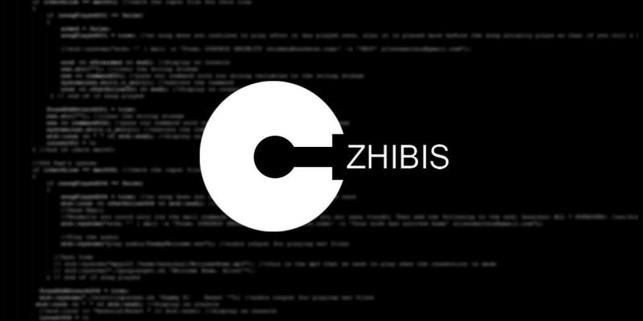

Portfolio 2022
Telus
A rapid prototyping tool created to test various UI layouts and experience it the way the user would. Created using Unity and reactive programming. A solo project, I wrote various algorithms to handle different selection states.
Stingray
A video streaming app with incredible flexability. I worked on this project with a larger team, and with a focus on the UI. I wrote custom animations, and also worked on implementing a style system which included a bootstrap scene swapper.
Facebook Posting Unity Asset
An asset created for the Unity Game engine for other developers. It is a simple facebook posting example with a customizable script and full documentation. Easily implemented into any project.
The Tree and the Stream


A short story/poem about a tree and a stream. It is a customizable story to read to small children. Developed using the Unity game engine. I came up with the origianl concept and design, wrote the scripts, processed and created some of the artwork, set up the scenes, created the animations, etc.
Broken Triangle Team Website


I wrote this website from the ground up for the Broken Triangle team. I did all of the coding. The full project is available on GitHub. Some of the graphics and promo video's were created by others in the Broken Triangle team.
NPI PC Tools

A WPF application for working with PC image files. Written in C#, used for adding drivers, windows updates, and executing various scripts. I wrote the GUI and updated and created aditional scripts to help simplify the image update process.
Squirrely

A game about a squirrel is search of the perfect hat. I helped to design the game, and I wrote most of the scripts. The game was created using the Unity game engine. I also published the game on Google Play and the Apple Store.
Virtual Deck Flashcards
A flashcard style study app developed for students, or anyone who needs to study on the go. I wrote this app from the ground up using Android Studio. It is a native Android app that I designed and made available on Google Play.
Project Czhibis
A home automation project that uses the connection status of your smart phone to your home network to trigger various actions such as playing music, turning you monitor on or off, backing up files, etc. Developed using C++, Sabayon Linux, and various shell scripts.